EAE1317 — Economia do Meio Ambiente e dos Recursos Naturais
2026-09-22
Desde as primeiras aulas, assumimos que \(D′(E)\) é dado, mas como poderíamos medir o dano? Por exemplo, considere um programa que deixa uma praia mais limpa: medir o benefício (queda no dano) dessa intervenção?
(a) Pelo custo do programa. O que foi gasto para limpar é o valor da limpeza.
(b) Perguntando às pessoas quanto elas pagariam por uma praia mais limpa.
(c) Olhando o que as pessoas já gastam para ir à praia, e quanto esse gasto muda.
Referência: Phaneuf e Requate, caps. 14 e 15
1. O dano era dado. \(D′(E)\) entra no modelo como informação conhecida.
2. O dano precisa ser medido. Não há preço observável.
3. Preferência revelada. O que as pessoas fazem com o dinheiro delas entrega o que elas não dizem.
4. Bens diferenciados. O valor do ar limpo embutido no preço do apartamento.
Willingness to Pay (WTP) é a disposição a pagar por uma mudança.
Willingness to Accept (WTA) é a disposição a aceitar alguma compensação por uma mudança.
Exemplo: estojo, WTA e WTP.
Na teoria, WTP e WTA são, frequentemente, tratadas como a mesma coisa.
No caso de um bem ambiental, a diferença estaria na alocação dos direitos de propriedade:
Reconhecem o arranjo? É o Teorema de Coase da aula 05: a dotação inicial de direitos muda quem paga, não a alocação.
Na prática, há uma diferença quantitativa entre WTP e WTA.
Exemplo: experimento com xícaras (Kahneman et al. 1990)
As xícaras foram sorteadas. Se a disposição a pagar é a mesma coisa que a disposição a aceitar, metade das xícaras deveria acabar trocando de mãos.
| mediana | |
|---|---|
| Preço mínimo de quem recebeu a xícara (WTA) | US$ 5,25 |
| Preço máximo de quem não recebeu (WTP) | US$ 2,25 |
| Xícaras negociadas | cerca de um quarto do previsto |
No caso de bens ambientais, a razão entre WTA e WTP pode ser ainda maior.
Quanto aceitaríamos receber para deixarmos a Floresta Amazônica ser transformada em um estacionamento gigante?
Quanto pagaríamos para evitar que a Floresta Amazônica vire um estacionamento?
Essa diferença entre WTA e WTP é um desafio, por exemplo, na elaboração de questionários sobre o valor atribuído a um bem ambiental:
Por muito tempo se atribuiu a diferença entre WTA e WTP ao efeito renda, que é pequeno para bens baratos. Aí a diferença observada parecia irracionalidade.
\[\max_{x,z} \left\{U\left(x,z,q\right)+\lambda \left(y-z-\sum {p}_{j}{x}_{j}\right)\right\}\]
\[\min_{x,z} \left\{z+\sum {p}_{j}{x}_{j}+\mu \left[\overline{u}-U\left(x,z,q\right)\right]\right\}\]
\[{x}_{j}\left[p,E\left(p,{u}^{0},q\right),q\right]={h}_{j}\left(p,{u}^{0},q\right) \forall j\]
À esquerda, a Demanda Marshalliana. À direita, a Demanda Compensada.
Vamos parametrizar o problema de forma mais concreta, como exemplo. Considere um consumidor com preferências Cobb-Douglas, em que \(x\) é uma ida (viagem) à praia:
\[U\left(x,z\right)=\sqrt{xz} \qquad y=100 \qquad {p}^{0}=4 \to {p}^{1}=1\]
\[x\left(p,y\right)=\frac{y}{2p} \qquad V\left(p,y\right)=\frac{y}{2\sqrt{p}} \qquad E\left(p,u\right)=2u\sqrt{p} \qquad h\left(p,u\right)=\frac{u}{\sqrt{p}}\]
\[V\left({p}^{0},y,q\right)=V({p}^{1},y-VC,q)\]
Para calcular o valor da variação compensada, fazemos:
\[VC=E\left({p}^{0},{u}^{0},q\right)-E\left({p}^{1},{u}^{0},q\right)=y-E\left({p}^{1},{u}^{0},q\right)\]
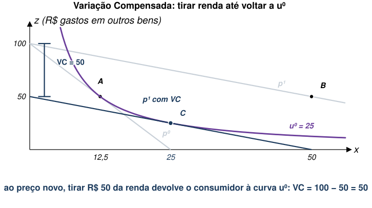
\[V\left({p}^{1},y,q\right)=V({p}^{0},y+VE,q)\]
\[VE=E\left({p}^{0},{u}^{1},q\right)-E\left({p}^{1},{u}^{1},q\right)=E\left({p}^{0},{u}^{1},q\right)-y\]
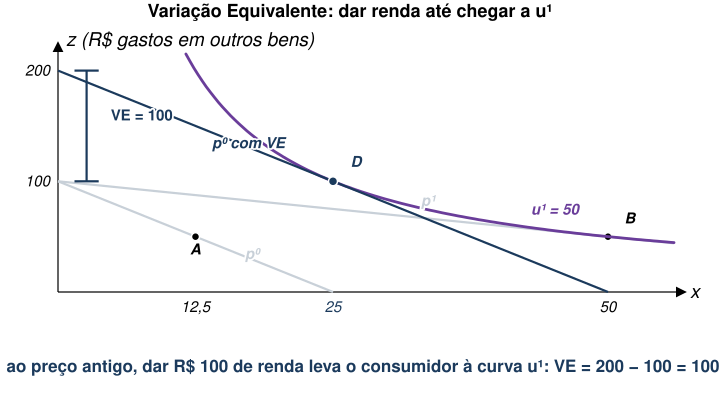
| pergunta que responde | utilidade de referência | valor | |
|---|---|---|---|
| Variação Compensada | quanto tiro de você depois da mudança? | \({u}^{0}\), a de antes | 50 |
| Variação Equivalente | quanto te dou no lugar da mudança? | \({u}^{1}\), a de depois | 100 |
\[VC=E\left({p}^{0},{u}^{0},q\right)-E\left({p}^{1},{u}^{0},q\right)=\int_{{p}_{j}^{1}}^{{p}_{j}^{0}} h({p}_{j},{p}_{-j},{u}^{0},q){dp}_{j}\]
\[VE=E\left({p}^{0},{u}^{1},q\right)-E\left({p}^{1},{u}^{1},q\right)=\int_{{p}_{j}^{1}}^{{p}_{j}^{0}} h({p}_{j},{p}_{-j},{u}^{1},q){dp}_{j}\]
Repare que a integral é em preço, e não em quantidade. É a faixa horizontal entre os dois preços, à esquerda da curva.
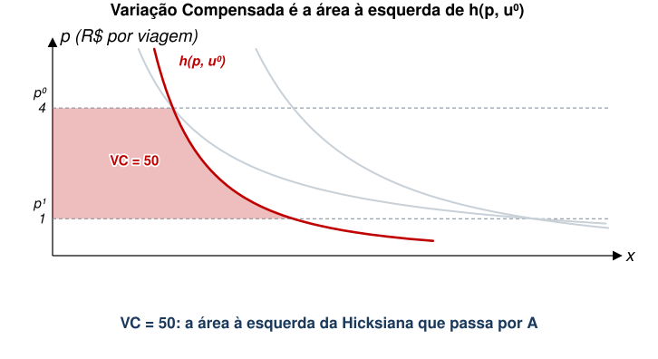
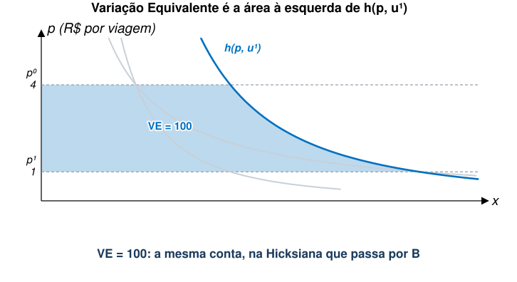
Uma aproximação sujeita a imprecisões: Excedente do Consumidor.
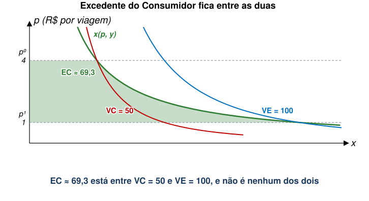
Com esta família de preferências as três medidas têm fórmula fechada, e o expoente \(\alpha\) é justamente a fatia do orçamento gasta com o bem:
\[VC=y\left(1-{p}^{-\alpha }\right) \qquad EC=\alpha y\ln p \qquad VE=y({p}^{\alpha }-1)\]
| viagem é 50% do orçamento | viagem é 5% do orçamento | |
|---|---|---|
| \(VC\) | 50,00 | 6,70 |
| Excedente do Consumidor | 69,31 | 6,93 |
| \(VE\) | 100,00 | 7,18 |
| erro do excedente sobre \(VC\) | 38,6% | 3,5% |
\[V\left(p,y,{q}^{0}\right)=V(p,y-VC,{q}^{1}) \qquad V\left(p,y,{q}^{1}\right)=V(p,y+VE,{q}^{0})\]
\[VC=y-E\left(p,{u}^{0},{q}^{1}\right) \qquad VE=E\left(p,{u}^{1},{q}^{0}\right)-y\]
É a mesma conta de antes, com \(q\) no lugar de \(p\).
Não há mercado para o bem ambiental, tampouco preços variando.
Não é possível usar o excedente do consumidor, pois não conseguimos traçar uma curva de demanda.
Se não temos medidas diretas, como a disposição marginal a pagar, precisamos de alternativas.
Veremos medidas indiretas baseadas no conceito de preferência revelada.
Usaremos variação de preço de outros bens para inferir o valor do bem ambiental.
Exemplo 1: Viagem a Manaus.
Exemplo 2: Filtro de Água ou Garrafas de Água.
Exemplo 3: Gasto de Turistas no Litoral.
As duas primeiras são o resto desta aula. A terceira é a aula seguinte inteira.
Este é o caso relacionado a atividades recreativas.
É como se \(q\) fosse uma qualidade do bem privado.
Vamos medir a disposição a pagar por um aumento de qualidade ambiental \({q}^{0}\to {q}^{1}\).
Uma possibilidade é:
\[A=\int_{{p}^{0}}^{\overline{p}\left({q}^{1}\right)} h\left(p,{u}^{0},{q}^{1}\right)dp-\int_{{p}^{0}}^{\overline{p}\left({q}^{0}\right)} h\left(p,{u}^{0},{q}^{0}\right)dp\]
Em que \(\overline{p}\left({q}^{1}\right)\) é o preço do bem privado que levaria a demanda por esse bem a zero quando \(q={q}^{1}\). O mesmo para \(\overline{p}\left({q}^{0}\right)\).
\(\overline{p}\left({q}^{1}\right)\) e \(\overline{p}\left({q}^{0}\right)\) são os preços de esgotamento (ou afogamento).
Exemplo: considere uma praia e dois cenários.
Aqui, assumimos que esses preços de esgotamento são finitos.
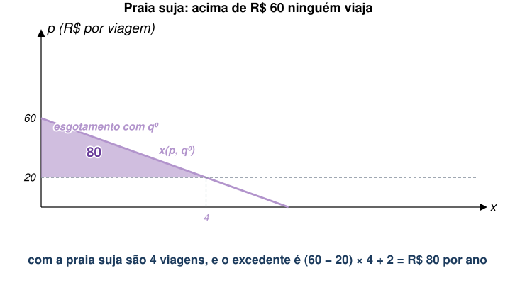
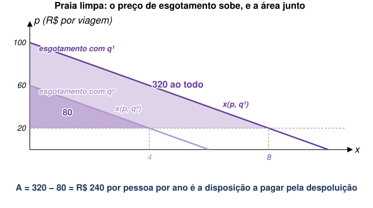
A questão é se \(A=VC\).
Verifiquemos (LOUSA).
\[A=VC+E\left[\overline{p}\left({q}^{1}\right),{u}^{0},{q}^{1}\right]-E\left[\overline{p}\left({q}^{0}\right),{u}^{0},{q}^{0}\right]\]
O que significa assumir \(E\left[\overline{p}\left({q}^{1}\right),{u}^{0},{q}^{1}\right]-E\left[\overline{p}\left({q}^{0}\right),{u}^{0},{q}^{0}\right]=0\) ?
Exemplo: é como valorizar os Lençóis Maranhenses só porque é possível viajar até lá.
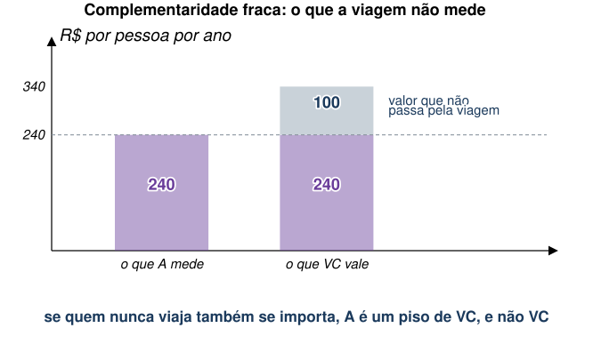
Quando poderia fazer sentido pensar que o bem ambiental só tem “valor de uso”?
Exemplo: cachoeiras no interior de São Paulo.
Obviamente, sabemos que a definição do que é “único” não é trivial.
Mesmo que o bem ambiental em questão seja não-essencial, ainda não conseguimos observar a Demanda Compensada.
Seria necessário aproximar \(VC\) usando a Demanda Marshalliana:
\[\int_{{p}^{0}}^{\overline{p}\left({q}^{1}\right)} x\left(p,y,{q}^{1}\right)dp-\int_{{p}^{0}}^{\overline{p}\left({q}^{0}\right)} x\left(p,y,{q}^{0}\right)dp\]
Sob algumas condições, essa aproximação é razoável.
O vazamento da plataforma Deepwater Horizon, em 2010, sujou a costa do Golfo do México. Para calcular a indenização, a agência ambiental americana precisava de um número (English et al. 2018).
| Dias de recreação perdidos | mais de 16 milhões |
| Excedente médio por dia perdido | cerca de US$ 42 |
| Dano recreacional total | US$ 661 milhões |
Este é o caso em que bens privados e o bem ambiental são intermediários na obtenção de um bem final.
Exemplo 1: Saúde de uma pessoa com asma.
Exemplo 2: Saúde e qualidade da água.
O valor do bem ambiental pode, portanto, ser inferido a partir dos bens privados substitutos.
Para estudar este caso, vamos considerar um modelo de produção:
Função de produção \(H=f(x,q)\).
O sinal de \({f}_{xq}(x,q)\) vai depender do contexto.
Exemplo 1: qualidade da água e saúde.
Exemplo 2: peixes pescados, idas ao pesqueiro e estoque de peixes no lago.
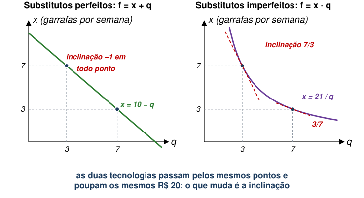
A função-custo pode ser escrita como um problema de minimização tradicional:
\[C\left(p,q,H\right)=\min_{x} \left\{px+\mu \left[H-f\left(x,q\right)\right]\right\}\]
O consumidor maximiza sua utilidade sujeita ao custo e ao formato de \(f(\cdot )\):
\[\max_{x,z} U(H,z) \text{ s.a. } y=C\left(p,q,H\right)+z, \quad H=f(x,q)\]
\[H\left(p,y,q\right)=f\left[x\left(p,y,q\right), q\right]\]
Para medir bem-estar, precisamos da função dispêndio:
\[E\left(p,u,q\right)=\min_{H,z} \left\{C\left(p,q,H\right)+z \text{ s.a. } U\left(H,z\right)=u\right\}\]
Novamente, \(VC=E\left(p,{u}^{0},{q}^{0}\right)-E\left(p,{u}^{0},{q}^{1}\right)\).
Primeiro, vamos analisar uma mudança marginal em \(q\), mantendo \(H\) constante.
A disposição marginal a pagar por uma mudança em \(q\) é:
\[MWTP=-\frac{\partial E\left(p,u,q\right)}{\partial q}=-\frac{\partial C\left(p,q,H\right)}{\partial q}\]
Vamos combinar essa expressão com os resultados anteriores da escolha do consumidor (LOUSA).
Ou seja, para uma mudança marginal em \(q\) mantendo \(H\) constante, conseguimos calcular a MWTP de três formas:
A terceira é a única que se observa: é o gasto com garrafas que se vê no caixa do supermercado.
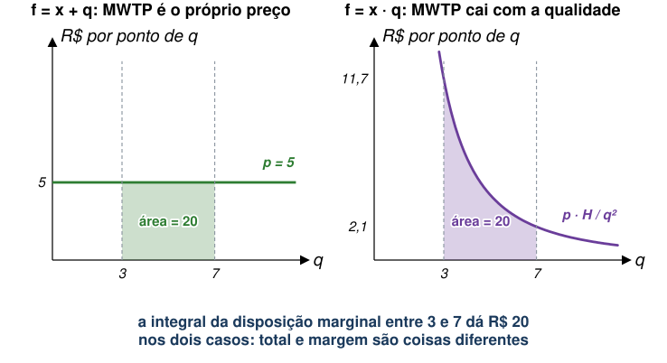
E se mudança não for marginal, saindo de \({q}^{0}\) para \({q}^{1}\)?
Podemos usar algo similar à medida usada para bens complementares.
\[A=\int_{{p}^{0}}^{\overline{p}\left({q}^{1}\right)} h\left(p,{u}^{0},{q}^{1}\right)dp-\int_{{p}^{0}}^{\overline{p}\left({q}^{0}\right)} h\left(p,{u}^{0},{q}^{0}\right)dp\]
No caso de bens substitutos, \(A=VC\) ocorre quando \(x\) é essencial para \(H\) (contrário do caso de complementares).
Quando \(x\) é essencial para \(H\), temos:
\[f\left(0,q\right)=0\to H=0\to U(0,z)\]
Se \(x\) é essencial, podemos usar mesma estratégia de antes com “preços de afogamento”:
Caso Especial: \(f(x,q)\) é separável.
Suponha que \(f\left(x,q\right)=x+q\).
Com isso, o problema de minimização de custo do consumidor será:
\[C\left(p,q,H\right)=\min_{x} \left\{px+\mu \left[H-x-q\right]\right\}\]
Assumindo solução interior, temos \(p=\mu\) e \(x=H-q\).
A função-custo é dada por \(C\left(p,q,H\right)=p(H-q)\).
Retomemos o problema de maximização de utilidade:
\[\max_{x,z} U[H,z] \text{ s.a. } y=C\left(p,q,H\right)+z, \quad H=f(x,q)\]
\[y=p\left(H-q\right)+z \to y+p\cdot q=p\cdot H+z \to y+p\cdot q=p\cdot f(x,q)+z\]
\(p\cdot q\) funciona como um modificador da renda \(y\): \(\tilde{y}=y+p\cdot q\).
Suponha \({q}^{1}-{q}^{0}>0\) → renda aumentaria em \(p({q}^{1}-{q}^{0})\).
Qual é a disposição a pagar por esse aumento de renda?
Logo, no caso separável em que bens são substitutos, a disposição a pagar por um aumento na qualidade do bem ambiental é simplesmente o preço do bem privado vezes a diferença de qualidade.
Na China, a norma de aquecimento ao norte do Rio Huai criou décadas de poluição a mais de um lado da linha. (Ito e Zhang 2020) usam dados de caixa de purificadores de ar para ler a disposição a pagar direto no consumo.
| por domicílio, por ano | |
|---|---|
| Reduzir PM₁₀ em 1 µg/m³ | US$ 1,34 |
| Eliminar toda a poluição causada pela norma do Huai | US$ 32,70 |
O NOx Budget Program é o cap-and-trade americano de óxidos de nitrogênio, primo do EU ETS da aula 07. (Deschênes et al. 2017) medem o que ele fez com a saúde.
Uma pessoa mora em São Paulo e vai ao litoral. Cada viagem custa R$ 20. A tabela traz o quanto ela valoriza cada viagem adicional, nos dois cenários de qualidade da praia.
| viagem | 1ª | 2ª | 3ª | 4ª | 5ª | 6ª | 7ª | 8ª |
|---|---|---|---|---|---|---|---|---|
| Praia suja | 40 | 30 | 20 | 10 | ||||
| Praia limpa | 80 | 70 | 60 | 50 | 40 | 30 | 20 | 10 |
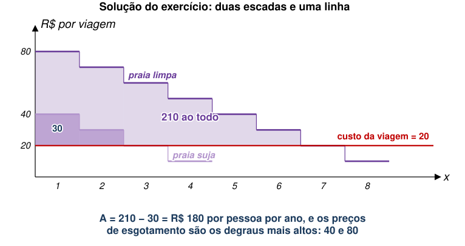
| benefício anual | |
|---|---|
| Quem vai à praia (50 mil pessoas × 180) | R$ 9 milhões |
| Quem mora em Manaus e nunca vai | R$ 0, por hipótese |
| Custo da despoluição | R$ 6 milhões |
Um programa deixa uma praia mais limpa. Como o economista mede o benefício?
A resposta é (c): pelo que as pessoas já gastam com bens ligados à praia, e por quanto esse gasto muda.
A alternativa (a) confunde custo com benefício, que é exatamente o erro que o modelo de custos e danos da aula 04 existe para evitar.
A alternativa (b) é o outro ramo da literatura, o de preferência declarada, e tem o problema de WTP contra WTA que vimos no começo da aula.
E a resposta de (c) é sempre um piso, porque só enxerga o que passa por algum mercado.
EAE1317 — Economia do Meio Ambiente e dos Recursos Naturais